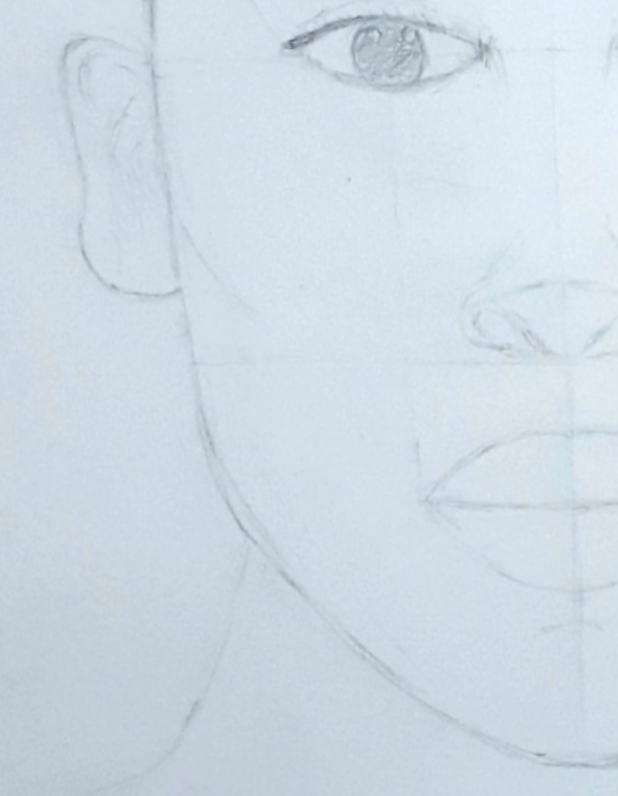
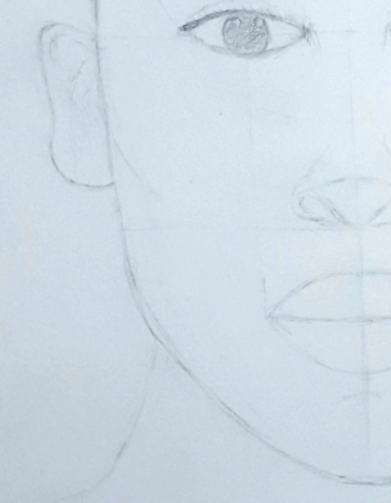
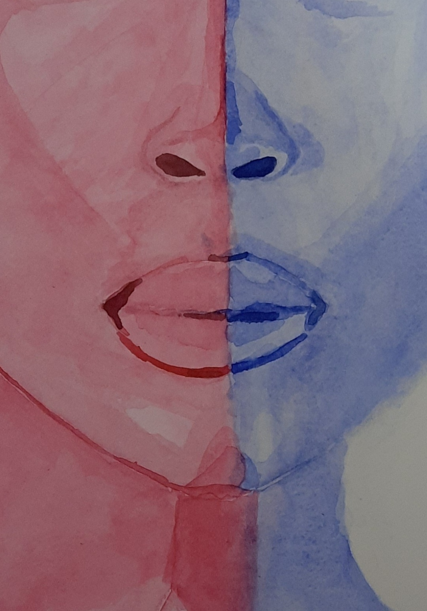
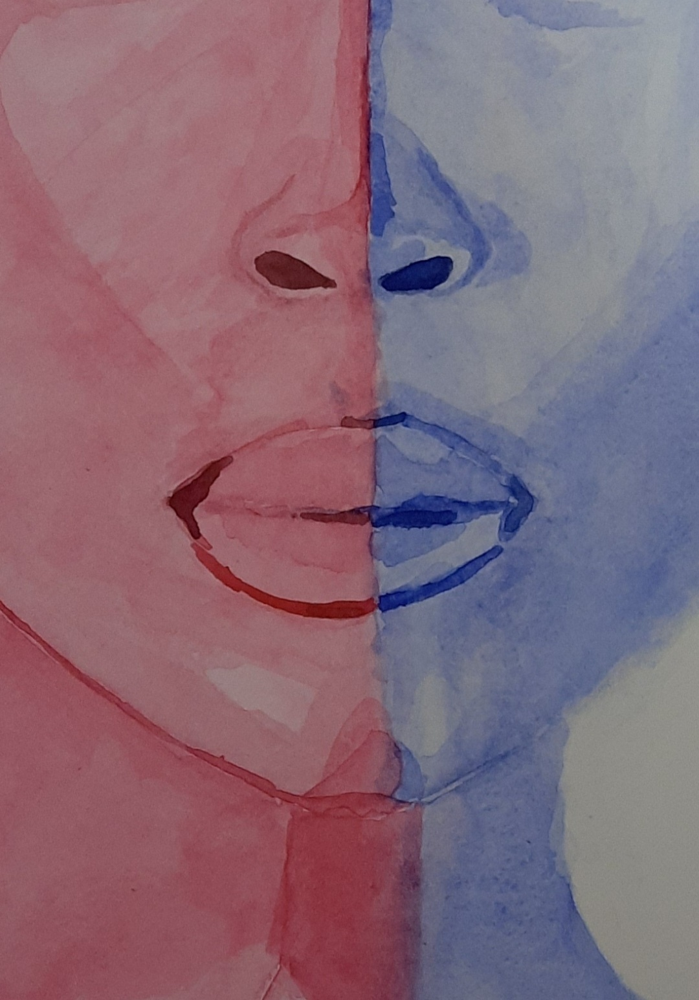

.png)

For this assignment, we needed to make a painting of a gel light photo of a model's face using watercolor by creating a form using light and shadows.
Gel Light Watercolor Portrait

-
Medium: Watercolor
Art type: Portraiture
Steps
Step 1 : First, I made a front facial proportion sketch to understand how to draw a face and did this by following a video made by my art teacher - Ms. Ashley Hatfield. I then chose an image of a lady and repeated the steps on an A4 sheet to make a sketch of the front facial proportion, and then modified it to suit the model's face.

 

Step 2 : I redrew the model on A3 paper and made improvements from the observations I made from my first sketch, such as shortening the length of the face and reducing the size of the eyes.
.jpg)
.jpg)
.jpg)
Step 3 : I started by painting the skin with a diluted pink color by adding a lot of water. Then to add the shadows I added less and less water and started painting on top of the light base color. I added the tiniest bit of black paint to darken the color for the eyebrows, eyes, nostrils and shadows around the lips.
 

Step 4 : Since I was unsure about how to add the texture to the hair, I just painted the hair uniformly with the blue and pink colors that I mixed with a tiny bit of black paint.